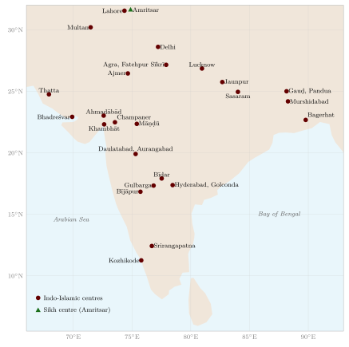
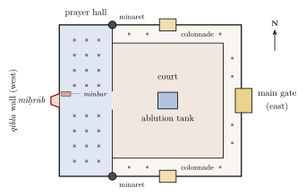
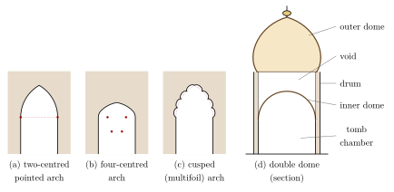
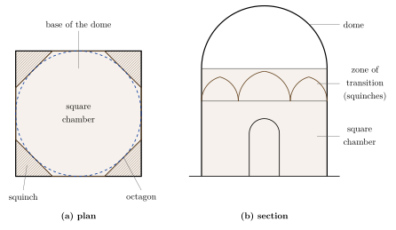
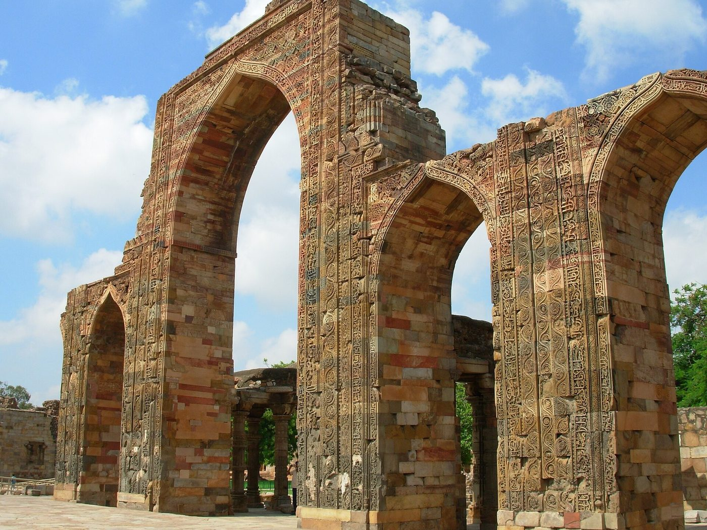
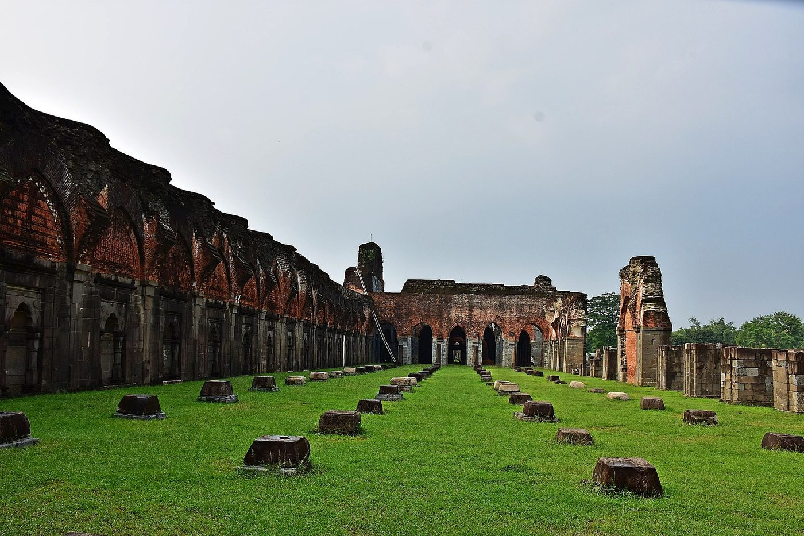
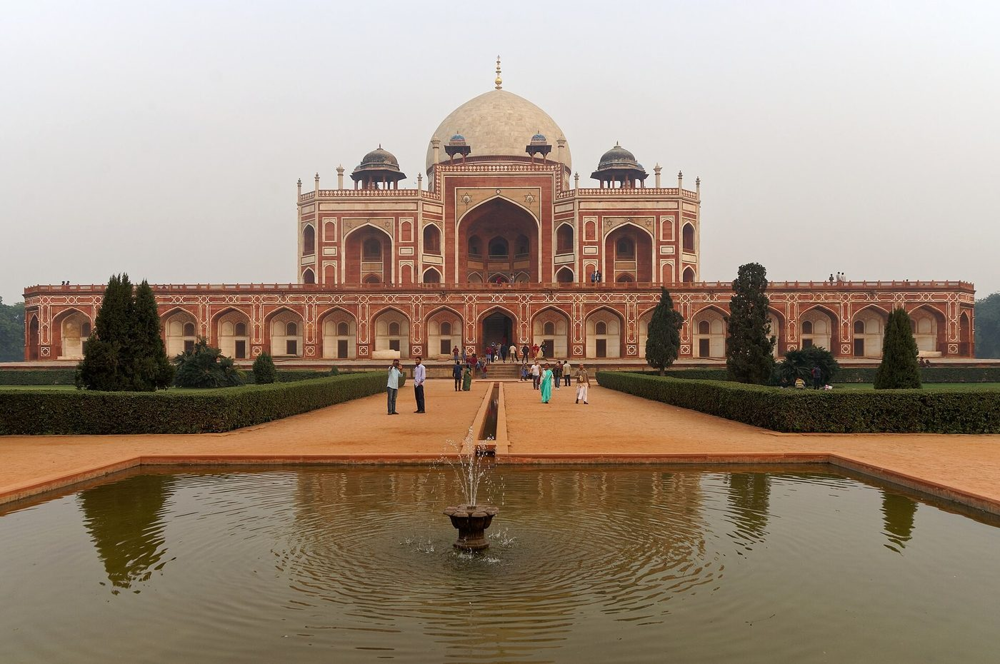
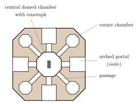
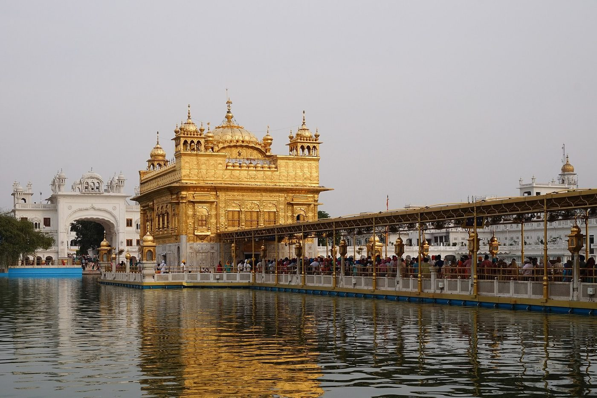

Chapter 6: Mosques, Tombs and Shrines: Indo-Islamic Architecture¶
Between the late 12th and the 18th centuries much of the most ambitious building in the subcontinent was done for Muslim rulers, nobles, saints and communities. This chapter surveys that architecture: the mosques, tombs, shrines, colleges and gateways of the Delhi Sultanate (from the Ghurid conquest of the 1190s to 1526), of the regional sultanates that succeeded it in Bengal, Gujarat, Jaunpur, Mālwā, Kashmir and the Deccan, and of the Mughal empire and its successor states. The forts and palaces of the period, many of them shared in form with Rajput and other courts, are treated in Chapter 7, the cities in Chapter 8, and the tanks, stepwells, gardens and baths in Chapter 9. The vāstu texts discussed in Chapter 2 say nothing about these buildings, which were designed in another tradition of geometry and practice; but they were built, for the most part, by the same communities of Indian masons, carvers and engineers who built the temples, and their history belongs to the history of Indian architecture as a whole.
6.1 A New Architecture¶
From the late 12th century, a new architecture developed in north India and later in the Deccan, to serve the religious and political needs of Muslim rulers and communities: the congregational mosque (jāmiʿ masjid), the minaret, the tomb, the madrasa, the palace and the walled garden. It brought with it techniques that were rare in earlier Indian building: the true arch built of wedge-shaped voussoirs, the dome raised over a square room on squinches or pendentives, the systematic use of lime mortar and concrete-like rubble cores, glazed tiles, calligraphic inscriptions and geometric ornament. These buildings were designed in part by architects from Iran and Central Asia, but they were built and carved by Indian masons and craftsmen, who brought to them their own skills and ornamental vocabulary. The result was not a foreign architecture transplanted to India but a series of new Indian architectures (Brown 1942; Asher 1992; Flood 2009). The principal centres discussed in this chapter are shown in Figure 6.1.

The name given to this architecture has itself changed. Nineteenth-century writers spoke of “Saracenic” or “Pathan” architecture, or, like James Fergusson, divided it by dynasty and supposed race; “Indo-Islamic”, the term used here, is a convenience rather than the name of a single style, for the buildings of Gujarat, Bengal, the Deccan and Delhi differ from one another as much as any of them differs from the buildings of Iran. Nor were they all religious: tombs, palaces, gateways, gardens, bridges and caravanserais belong to the same tradition as the mosques. The sources for its history are unusually rich. Foundation inscriptions in Arabic and Persian give dates, patrons and sometimes builders; Persian chronicles describe the founding of cities and mosques; the memoirs of Bābur and Jahāngīr and the official histories of the reigns of Akbar and Shāh Jahān describe buildings and gardens in detail; and for the Tāj Mahal there survives an unusual body of contemporary documents (Begley and Desai 1989). The standard surveys are Percy Brown’s volume on the Islamic period, Catherine Asher’s history of Mughal architecture, Ebba Koch’s studies of the Mughals and George Michell and Mark Zebrowski’s book on the Deccan; Robert Hillenbrand’s study of Islamic architecture explains the building types in their wider setting (Brown 1942; Asher 1992; Koch 1991; Michell and Zebrowski 1999; Hillenbrand 1994).
6.2 Building Types¶
A congregational mosque is oriented towards Mecca, which from India lies to the west; its principal wall (the qibla wall) therefore faces west, and is marked by a niche (miḥrāb) towards which worshippers pray, with a pulpit (minbar) beside it. In front of the prayer hall lies a court, often with a tank for ablutions, surrounded by colonnades and entered through gateways; minarets, from which the call to prayer was given, were absent from many early Indian mosques and became common in the regional sultanates of the 15th century and under the Mughals (Figure 6.2).

Besides the congregational mosque used for the Friday prayer, a town had many smaller mosques (masjid) serving a quarter, a palace, a market or a tomb, and an open prayer-ground (ʿīdgāh) outside the walls: little more than a long qibla wall with a miḥrāb and steps for the preacher, in front of which the whole Muslim population could gather for the two great festivals. Some mosques had galleries screened for women, as in the Sharqī mosques of Jaunpur, or a raised gallery or enclosure (maqṣūra) for the ruler, as in the Adina mosque at Pandua.
The tomb (Arabic maqbara, Persian gunbad; a tomb in a garden is often called rauza) has no place in the earliest Islamic tradition, which discouraged building over graves, but monumental tombs had become common in Iran and Central Asia by the 10th century, and in India they became the most ambitious of all Islamic building types. A tomb usually consists of a domed chamber over the cenotaph, a symbolic grave at floor level, with the body lying in a crypt below; it often has a miḥrāb in its west wall, and may stand in a walled garden (Chapter 9) or beside its own mosque. The shrine of a Sufi saint, the dargāh (Persian, “court” or “threshold”), grew around his tomb, with assembly halls, mosques, kitchens, lodgings for pilgrims and the tombs of disciples and patrons who wished to be buried near him (Section 6.8).
Three other types completed the repertory. The madrasa, a college of religious learning with rooms for teachers and students round a court, and the khānqāh, a hospice for Sufis, were often attached to mosques or tombs; the madrasa built by Fīrūz Shāh Tughluq on the bank of the Ḥauẓ Khāṣ reservoir in Delhi (1352) and that of Maḥmūd Gāwān at Bīdar (1472) are the best-preserved early examples. Rulers and nobles built caravanserais (sarāʾī) along the main roads: fortified courts with rooms for travellers and their animals, a mosque and a well. The chronicles credit Sher Shāh Sūr with a chain of them on the road from Bengal to the Punjab, and many Mughal ones survive, among them the sarāʾī at Nūr Mahal in the Punjab, built under Jahāngīr. Bridges, such as the stone bridge over the Gomatī at Jaunpur built for Akbar’s governor Munʿim Khān in the 1560s, belong to the same tradition of public works.
6.3 Arch, Dome and Ornament¶
The most obvious technical novelty of the new architecture was the true arch (Figure 4.6). In a corbelled arch each course of stone projects a little beyond the one below until the two sides meet at the top; in a true arch, wedge-shaped stones (voussoirs) are set radially, so that the load is carried round the curve in compression and the arch can span wider openings, provided that its outward thrust is resisted at the sides by heavy walls or buttresses. Indian builders had used the arch principle in brick, but had no tradition of the stone arch; the screen of the first Delhi mosque is corbelled, and the earliest true arches in Delhi belong to the later 13th century. The pointed arch was the norm. Sultanate builders used the plain two-centred arch and, in the ʿAlāʾī Darwāza, a horseshoe-shaped arch with a fringe of spearhead-shaped points on its underside; Mughal builders used the four-centred arch and, from the 1630s, the cusped or multifoil arch (Figure 6.3).
A dome raised over a square room needs a zone of transition that turns the square into a circle (Figure 6.4). Indian builders mostly used the squinch, an arch or a series of corbelled courses thrown across each corner of the square, which turns it into an octagon; a second tier of smaller arches can turn the octagon into a sixteen-sided figure on which the circular base of the dome rests. In the pendentive, more common in the Byzantine and Ottoman worlds, the corners are filled instead by curved triangles of masonry. Mughal builders also used nets of intersecting ribs, inherited from Timurid Iran and Central Asia, to make the transition, and at the Gol Gumbaz at Bījāpur intersecting arches springing from the walls carry the dome on a ring that projects over the hall. Domes grew taller on the outside than was convenient inside, and from the early 16th century builders in Delhi raised a second, outer shell above the inner dome, leaving a void between them; the tomb of Sikandar Lodī (1517–18) is usually cited as one of the first Indian examples, and Humāyūn’s tomb and the Tāj Mahal have high outer domes over much lower inner ones (Figure 6.3d).


Sultanate and Mughal buildings were usually built with cores of rubble or brick set in lime mortar and faced with dressed stone or plaster; the use of lime mortar on a large scale was itself one of the innovations of the period. The Tāj Mahal is not built of solid marble but of brick masonry faced with marble slabs, and the red sandstone buildings of Agra and Delhi are likewise facings over cores of brick and rubble. Surfaces were finished with carved or incised plaster; with glazed tiles, as at Multan, Bīdar, Māṇḍū and Lahore; with inlay of white marble and black stone in red sandstone; and, under Jahāngīr and Shāh Jahān, with parchīn kārī, the inlay of coloured and semi-precious stones in white marble (see Volume 17, Śilpa–Kāru).
Because figural images were excluded from mosques and tombs, ornament took three main forms: geometric pattern, plant forms and writing. Inscriptions, usually verses of the Qurʾān in Arabic, with Persian poems and foundation texts on secular buildings, framed doorways, miḥrābs and arches, and the calligraphers who designed them were among the few artists whose names were recorded on the buildings themselves: Amānat Khān Shīrāzī signed the Qurʾānic inscriptions of the Tāj Mahal. Plant ornament drew on more than one tradition. The scrolling vines and lotuses of the Qutb screen are Indian; the naturalistic flowering plants carved in relief on the dados of the Tāj Mahal owe something, as Koch has shown, to European herbals that reached the Mughal court (Koch 2006). Pierced stone screens (jālī), geometric or vegetal, filled windows and enclosed cenotaphs, continuing a long Indian tradition of pierced stone windows in temples.
Many of the most characteristic features of these buildings came from the Indian builders’ own vocabulary: the stone bracket and the deep sloping eave (chhajjā) that shades a wall, the small domed pavilion on pillars (chhatrī) used on roofs and at corners, the lotus crest and pot-shaped finial (kalaśa) that top many Sultanate and Mughal domes, and the trabeate halls and corbelled domes of Gujarat. The meeting of the arch and dome with this trabeate tradition is the central theme of the history that follows.
6.4 The Delhi Sultanate¶
The earliest major monument is the Qutb complex at Mehrauli in Delhi. The congregational mosque, later called Quwwat al-Islām, was begun in the 1190s by Quṭb al-Dīn Aybak; an inscription on its gate states that materials from twenty-seven temples were used in its construction, and its colonnades are built of reused temple pillars. In front of the prayer hall Aybak built a monumental screen of arches. Indian masons, who were not familiar with the true arch, built these arches by corbelling, and carved them with scrolling vines and Arabic inscriptions in the local manner (Figure 6.5). Beside the mosque stands the Qutb Mīnār, a fluted tower of red and buff sandstone about 72.5 metres high, begun around 1199 and completed by Iltutmish; its upper storeys were rebuilt by Fīrūz Shāh Tughluq after lightning damage in the 14th century. The complex also contains the iron pillar, a Gupta-period column of the late 4th or early 5th century, bearing an inscription of a king Candra, which was brought to the site from elsewhere and is famous for its resistance to corrosion.


Iltutmish (r. 1211–1236) enlarged the mosque, extending the screen on both sides and greatly increasing the area of the court, and built the earliest surviving monumental Islamic tombs in India. The first, known as Sulṭān Ghārī (1231), was built for his eldest son, Nāṣir al-Dīn Maḥmūd: an octagonal underground burial chamber below a raised and walled court, with a marble miḥrāb on its west side. The second, his own tomb behind the mosque (c. 1235), is a square sandstone chamber whose interior is covered with carved Qurʾānic inscriptions and geometric and floral ornament; it was designed to carry a dome on corbelled squinches, but no dome survives and it may never have been completed. ʿAlāʾ al-Dīn Khaljī planned a further enlargement of the mosque and a minaret twice the size of the Qutb Mīnār, the ʿAlāʾī Mīnār, whose rubble core, abandoned at his death in 1316, still stands to the north of the mosque.
The use of temple material in early mosques has been much discussed, and the historians who have studied it disagree. Richard Eaton, working from inscriptions and chronicles, compiled a list of some eighty instances of temple desecration between the late 12th and the 18th centuries that he regarded as reliably documented, and presented it as provisional; he argued that desecration was real but selective, directed above all at royal temples associated with defeated enemies, and that it must be understood as political as well as religious (Eaton 2000). Others give more weight to the religious language in which the Persian chronicles describe these acts, as the fulfilment of a religious duty, and to the much larger numbers of destroyed temples that the chronicles claim; André Wink, for example, treats iconoclasm as integral to the conquests of the 11th to 13th centuries (Wink 1997), and the writer Sita Ram Goel compiled a list of some two thousand Muslim buildings said to stand on temple sites or to incorporate temple material (Goel 1990–1991). Critics of the larger figures reply that the chronicles’ victory rhetoric cannot be taken at face value, and critics of the smaller ones that many events were never recorded at all. The kinds of evidence differ in what they can show: chronicles record what conquerors claimed, foundation inscriptions what patrons wished to commemorate, and the fabric of buildings, such as the reused pillars of the Qutb mosque, what was actually done at a particular site. Finbarr Barry Flood has studied how such reused materials were reinterpreted in their new settings (Flood 2009). The question is politically charged, and it is best approached site by site, through these three kinds of evidence.
True arches and domes appear in Delhi from the late 13th century, in the tomb of Balban, and in mature form in the ʿAlāʾī Darwāza (1311), a domed gateway to the Qutb mosque faced with red sandstone and white marble. The Tughluq rulers of the 14th century built in a massive, austere style, with sloping walls, as in the fortified city of Tughluqābād and the tomb of Ghiyāth al-Dīn Tughluq.
The Tughluq period was one of intense building. Ghiyāth al-Dīn’s tomb (c. 1325), a square chamber with sharply battered walls of red sandstone banded with white marble under a white marble dome, stands within its own small fortified enclosure, joined to Tughluqābād by a causeway across what was once a reservoir. Fīrūz Shāh Tughluq (r. 1351–1388) and his nobles built mosques, madrasas, hunting lodges, dams and new towns across the Sultanate. At his citadel of Fīrūzābād (Fīrūz Shāh Kotla) on the Yamunā he set one of the two Aśokan pillars he had brought to Delhi on top of a three-storeyed pyramidal building; and his minister Khān-i Jahān Junān Shāh is credited with a series of mosques raised on high plinths and roofed with many small domes, such as the Kalān Masjid (1387) and the Khirkī mosque, whose covered prayer space is divided into four small courts by cross-shaped aisles. The tomb of Junān Shāh’s father, Khān-i Jahān Tilangānī (1368–69), Fīrūz Shāh’s chief minister, near the dargāh of Niẓām al-Dīn, is usually regarded as the first octagonal tomb in Delhi: a domed chamber surrounded by an arcaded verandah.
The Lodī and Sayyid rulers of the 15th century developed the octagonal tomb surrounded by an arcaded verandah, a type later taken up by the Mughals. The tombs of the Lodī Gardens in Delhi, and the tomb of Sher Shāh Sūr at Sasaram in Bihar (1540s), an octagonal domed tomb rising from an artificial lake, are among the finest examples. Tombs were often the centres of larger complexes: at Sarkhej near Ahmadābād, the tomb of the Sufi saint Shaikh Aḥmad Khattū, with a mosque, palaces and a great stepped tank (15th century), shows the Gujarati synthesis of local and Islamic forms at its most serene, and the shrine (dargāh) of Niẓām al-Dīn Auliyā in Delhi became the nucleus of a whole quarter of tombs and mosques. The octagonal type was used above all for the tombs of rulers, such as Mubārak Shāh Sayyid (1434), Muḥammad Shāh Sayyid (c. 1444) and Sikandar Lodī (1517–18), while many nobles were buried in square tombs that appear from outside to have two or three storeys, such as the Baṛā Gumbad and the Shīsh Gumbad in the Lodī Gardens. The mosque beside the Baṛā Gumbad (1494), with its richly carved plaster, and the Qilʿa-i Kuhna mosque of Sher Shāh in the Purānā Qilʿa (c. 1541), whose five-arched façade of red sandstone inlaid with white marble and black stone looks forward to the Mughal style, show how far the Sultanate builders had refined their art by the eve of the Mughal conquest.
6.5 The Regional Sultanates¶
When the authority of Delhi declined in the 14th and 15th centuries, regional sultanates developed distinct architectural styles, each drawing on local traditions. Each was shaped by local materials (brick in Bengal, the fine sandstone of Gujarat and Mālwā, the basalt and granite of the Deccan, timber in Kashmir and Kerala), by the workshops and craft communities of the region, and by the connections of each court: Gujarat with the trade of the Arabian Sea, the Deccan with Iran and the Ottoman world, Bengal with its own deltaic hinterland. Table 6.1 summarises the principal styles.
| Region and dynasty | Capitals and period | Characteristic buildings |
|---|---|---|
| Bengal: Ilyās Shāhī, Ḥusain Shāhī and later sultans | Pandua, Gauḍ; c. 1338–1576 | Brick and terracotta; curved cornices; Adina mosque, Eklākhī tomb, Choṭā Sonā Masjid |
| Jaunpur: Sharqī sultans | Jaunpur; 1394–1479 | Arched propylons (pīshtāq) screening the dome; Atala and Jāmiʿ mosques |
| Gujarat: Aḥmad Shāhī sultans | Ahmadābād, Champaner; 1407–1573 | Trabeate halls behind arched façades; carved minarets; Jāmiʿ Masjid of Ahmadābād, Sīdī Saiyyid mosque; stepwells |
| Mālwā: Ghūrī and Khaljī sultans | Dhār, Māṇḍū; c. 1401–1531 | Domed mosques and tombs on high plinths; palaces between tanks |
| Kashmir: Shāh Mīrī and Chak sultans | Srinagar; 1339–1586 | Timber mosques and shrines with pyramidal roofs |
| The Deccan: Bahmanī sultans | Gulbarga, Bīdar; 1347–1527 | Covered mosques; tile-faced madrasa; painted tombs |
| The Deccan: ʿĀdil Shāhī sultans | Bījāpur; 1490–1686 | Ibrāhīm Rauza; Gol Gumbaz |
| The Deccan: Quṭb Shāhī sultans | Golconda, Hyderabad; 1518–1687 | Chār Mīnār; royal tombs on high platforms |
6.5.1 Bengal¶
In the Bengal delta, where building stone is scarce, the sultans built in brick, finished with carved terracotta and, in the grandest buildings, faced with stone taken from older monuments. The vast Adina mosque at Pandua (1375; Figure 6.6, left), built by Sikandar Shāh of the Ilyās Shāhī dynasty, was among the largest mosques ever built in the subcontinent: a great court surrounded by brick-vaulted aisles, a prayer hall divided by a barrel-vaulted central nave, and a raised royal gallery (Bādshāh kā Takht) from which the sultan could attend prayer. Its scale proclaimed the independence of the dynasty from Delhi. From the 15th century a more distinctively Bengali type prevailed: a compact square or rectangular brick building, often without a court, covered by one or more domes on brick or stone pillars, with corner towers and a curved cornice derived from the bamboo-and-thatch huts of the region. The Eklākhī tomb at Pandua, a square domed brick building of the early 15th century often identified as the tomb of Sultan Jalāl al-Dīn Muḥammad Shāh, the son of Rājā Gaṇeśa who became a Muslim, is the classic early example; the Choṭā Sonā Masjid at Gauḍ (built in the reign of ʿAlāʾ al-Dīn Ḥusain Shāh, 1493–1519), faced with carved stone, and the Bāṛā Sonā Masjid (1526) are later ones. In the south of the delta, in present-day Bangladesh, the Shaṭ Gumbad mosque at Bagerhat, associated with the mid-15th-century pioneer Khān Jahān ʿAlī, is a large hall roofed by rows of small domes, the centre of a group of mosques, tanks and roads that UNESCO lists as the Historic Mosque City of Bagerhat.
Perween Hasan has shown how the builders of the early mosques of Bengal adapted brick construction, terracotta ornament and the local roof form to the needs of Islamic worship, producing mosques that are unmistakably Bengali (Hasan 2007). Richard Eaton has shown that in the Mughal period many mosques and shrines in the eastern delta were founded on grants of forest land to pioneers who cleared it for rice cultivation, so that the spread of mosques across the delta followed the advance of the agrarian frontier (Eaton 1993). The curved roof of the Bengali hut (Bengali do-cālā, cār-cālā) had a long afterlife: it passed into Mughal and Rajput architecture as the baṅglā roof, and into the brick temples of Bengal (Chapter 5).


6.5.2 Gujarat¶
Gujarat had Muslim communities, mostly of merchants and sailors, long before it had Muslim rulers. Alka Patel has shown that the earliest surviving Islamic buildings of the region, a small mosque and shrines at Bhadreśvar in Kachchh of the later 12th century, were built for these communities by local masons in the trabeate technique and the ornamental idiom of the contemporary Māru-Gurjara temples (Chapter 4) (Patel 2004). After the conquest of Gujarat by the Delhi Sultanate at the end of the 13th century, congregational mosques were built in the old towns, such as the Jāmiʿ Masjid of Khambhāt (1325), partly from the materials of earlier temples.
The independent sultans of Gujarat, from Aḥmad Shāh I, who founded Ahmadābād in 1411, developed the style further. Their Jāmiʿ Masjid at Ahmadābād (1424) combines arches with the trabeate pillared halls, carved balconies and corbelled domes of local temple architecture: its prayer hall is a forest of carved pillars carrying corbelled domes, its central bays rise in two storeys round an open well that lets light into the hall from a clerestory, and its arched façade was flanked by two minarets that fell in the earthquake of 1819. Later mosques refined the type. Slender, richly carved minarets became a hallmark of the style, as in the mosque of Rānī Sīprī (1514); and the Sīdī Saiyyid mosque (1572–73) is famous for its pierced stone screens (jālī) in the form of trees. The masons were drawn from the same workshops that built the region’s Jain and Hindu temples, and Gujarati forms reappear in Akbar’s buildings at Fatehpur Sīkrī. The great stepwells of the period are discussed in Chapter 9.
Champaner, the city built by Sultan Maḥmūd Begaṛā of Gujarat at the foot of Pavagadh hill at the end of the 15th century, with its Jāmiʿ Masjid (1513), combining tall minarets, a carved stone façade and a domed prayer hall with Gujarati temple ornament, was largely abandoned in the 16th century; together with the Hindu and Jain temples on the hill above, it forms the UNESCO site of Champaner-Pavagadh.
6.5.3 Jaunpur and Mālwā¶
The Sharqī sultans of Jaunpur (1394–1479), on the Gomatī, built a series of mosques with a distinctive feature: a monumental arched propylon (pīshtāq) in the centre of the prayer-hall façade, flanked by tapering, buttress-like towers, which rises above the dome behind it and hides it from the court. The Atala mosque (1408), with its monumental screen-gateway, traditionally said to stand on the site of a temple of Atala Devī, is the earliest; the Jāmiʿ Masjid, completed under Ḥusain Shāh Sharqī around 1470, is the largest. These mosques also have upper galleries, screened for women, beside the central bay.
In Mālwā, the sultans built a capital of mosques, palaces, pavilions and tanks on the plateau of Māṇḍū, above the Narmadā valley. Its Jāmiʿ Masjid (completed 1454) is a severe domed building of red sandstone on a high plinth, approached by a great flight of steps. The tomb of Hūshang Shāh (d. 1435) behind it is built entirely of white marble, an early use of marble for a whole building in India; an inscription in it, usually dated 1659, records a visit by four architects of Shāh Jahān’s court, among them Ustād Ḥāmid, who is associated with the building of the Tāj Mahal, which suggests that the Mughal builders studied it as a precedent. The palaces of Māṇḍū, such as the Jahāz Mahal (“ship palace”), a long two-storeyed building between two tanks, and the Hindolā Mahal (“swing palace”), an audience hall with steeply sloping buttressed walls, show a refined architecture of water, terraces and open pavilions.
6.5.4 The Deccan¶
The Bahmanī sultanate was founded in 1347 by a rebel against Muḥammad bin Tughluq, and its first buildings carried the architecture of Tughluq Delhi to the Deccan; architects and craftsmen from Iran later gave it a more Persian character. The Bahmanī sultans built the great mosque of Gulbarga (completed 1367), almost entirely covered by domes: it has no open court, the whole rectangle being roofed, with a large dome over the prayer hall, small domes over the aisles and wide, low arches that open the side aisles to the light. Their madrasa of Maḥmūd Gāwān at Bīdar (1472), faced with glazed tiles, was a four-storeyed college of a type common in Iran; it was partly destroyed when gunpowder stored in it exploded in 1696.
Beyond their mosques, the Deccan sultanates left great fortified cities and royal necropolises. At Bīdar, the Bahmanī capital from 1429, the fort encloses palaces decorated with glazed tiles and inlay, and the tombs of the later Bahmanī sultans at Ashtur, with their great domes and painted interiors, stand outside the town. At Golconda, the tombs of the Quṭb Shāhī kings, built on high platforms with arcades and bulbous domes, form a royal necropolis below the citadel. At Golconda and Hyderabad the Quṭb Shāhī sultans built the Chār Mīnār (1591), a four-arched monument with corner minarets at the crossing of the main streets of their new city.
The ʿĀdil Shāhī sultans of Bījāpur built the Ibrāhīm Rauza (c. 1626), the tomb of Ibrāhīm ʿĀdil Shāh II and his family, with a mosque facing it across a court on a common plinth, slender minarets, carved stone ceilings and finely worked screens; an inscription names its architect as Malik Ṣandal. Their Gol Gumbaz (completed c. 1656; Figure 6.6, right), the tomb of Muḥammad ʿĀdil Shāh, has a square hall, about 41 metres across, covered by one of the largest domes of the pre-modern world, carried on intersecting arches; its gallery is known for its echoes. The ʿĀdil Shāhī city also contains the Jāmiʿ Masjid, the Āsār Mahal and a remarkable system of water supply. The architecture of these sultanates, influenced by Iran, Central Asia and the Ottoman world as well as by Deccani building traditions, developed bulbous domes, tall arcades, elaborate stucco and black basalt carving (Michell and Zebrowski 1999; Merklinger 1981).
The Deccan was a frontier where the sultanates and their neighbours, above all Vijayanagara, fought over the same forts and cities for two centuries. Richard Eaton and Phillip Wagoner have studied how the monuments of such contested sites were destroyed, preserved, reused or remembered: at Warangal, for example, the four great stone gateways of the Kākatīya temple at the centre of the fort were left standing after the temple itself was destroyed, while the conquerors built a new audience hall nearby (Eaton and Wagoner 2014).
6.5.5 Kashmir and the Malabar Coast¶
In two regions, mosques adopted the timber architecture of the local tradition rather than the arched and domed forms of Delhi. In Kashmir, the Jāmiʿ Masjid of Srinagar (founded 1394, rebuilt several times) has a vast court surrounded by halls whose roofs are carried on hundreds of deodar pillars, and the shrine of Shāh Hamadān (Khānqāh-i Maulā) on the Jhelum is a square timber building with a pyramidal roof and spire, built in layers of logs and brick. On the Malabar coast of Kerala, where Muslim communities had lived since the early centuries of Islam through the Arabian Sea trade, mosques such as the Mishkāl mosque at Kozhikode (14th century, rebuilt) were built like Kerala temples and houses, with laterite bases, carved timber walls and several storeys of steep tiled roofs. These buildings show that Indo-Islamic architecture was as regionally varied as the temple architecture of India. Mehrdad Shokoohy’s survey of the Muslim architecture of the southern coasts shows the same adaptation in the stone mosques of the Tamil coast, whose pillars and mouldings follow the Drāviḍa tradition (Shokoohy 2003).
6.5.6 Multan and Sindh¶
The lower Indus valley, now in Pakistan, had been ruled by Muslim dynasties since the Arab conquest of Sindh in the early 8th century, and its brick architecture followed a course of its own, closer to that of Iran. At Multan, the tomb of the Sufi Shāh Rukn-i ʿĀlam (d. 1335) is a great octagonal brick building of the early 14th century, with sloping walls strengthened by tapering corner turrets, a second octagonal storey and a dome, decorated with carved brick and timber and with glazed tiles in white and shades of blue; tradition holds that it was built by Ghiyāth al-Dīn Tughluq while he was governor of the region, which would connect it with the battered walls of his tomb at Delhi. Similar octagonal tombs with glazed tile decoration survive at Uch. Near Thatta, the necropolis on the Makli hill contains thousands of tombs of the 14th to 18th centuries: the stone tombs of the Samma rulers, carved with ornament close to that of contemporary Gujarat, and the brick and tile tombs of their successors and of the Mughal governors. Shāh Jahān’s mosque at Thatta (1640s), roofed by many domes and lined with glazed tiles, continues the same tradition into the Mughal period. These buildings are a reminder that the Indo-Islamic architecture of the subcontinent extends beyond the borders of modern India, into Pakistan and Bangladesh, and that its regional schools must be studied together.
6.5.7 Exchange¶
The exchange was not one-way. At Vijayanagara, the Hindu capital of the South, courtly buildings such as the Lotus Mahal and the elephant stables use arches, domes and vaults derived from the architecture of the Deccan sultanates, alongside temples in the Drāviḍa tradition (Chapter 8).
6.6 The Mughals¶
The Mughal dynasty, founded by Bābur in 1526, created one of the most refined architectural traditions in the Islamic world (Koch 1991; Asher 1992). Bābur (r. 1526–1530) built little in India apart from gardens and a few mosques, such as those at Pānīpat and Sambhal, and his son Humāyūn (r. 1530–1540 and 1555–1556) began a new city at Delhi, Dīn Panāh, before he was driven out by Sher Shāh Sūr, whose short-lived dynasty completed the Purānā Qilʿa and built the tomb at Sasaram. Mughal architecture proper begins with the reign of Akbar (r. 1556–1605), and its history is usually divided by reigns: Akbar’s buildings in red sandstone, combining Timurid planning with the trabeate construction and ornament of Gujarat and Rajasthan; the transitional period of Jahāngīr (r. 1605–1627), with its taste for inlay and painted plaster; the classic white marble architecture of Shāh Jahān (r. 1628–1658); and the work of Aurangzeb (r. 1658–1707) and his successors.


- Humāyūn’s tomb, Delhi (completed c. 1571)
- The first great Mughal tomb, designed by the Persian architect Mīrak Mīrzā Ghiyāth for the emperor Humāyūn. It stands on a high arcaded platform (Figure 6.7, left) in the centre of a walled garden divided into four quarters by water channels (chahār bāgh). Its double dome, its plan of interconnected octagonal chambers around a central hall, and its facing of red sandstone inlaid with white marble set the pattern for later Mughal tombs. The arrangement of a central domed chamber surrounded by eight subsidiary spaces, known in Persian as hasht bihisht (“eight paradises”), came from the pavilions and tombs of Timurid Iran and Central Asia; the Mughals used it for tombs and pavilions down to the Tāj Mahal (Figure 6.8).
- Fatehpur Sīkrī (1571–c. 1585)
- Akbar’s new capital near Agra, built of red sandstone, combines arches and domes with the trabeate construction, brackets, chhatrīs and carved pillars of Gujarat and Rajasthan. Its great mosque, entered through the Buland Darwāza, contains the marble tomb of the Sufi saint Shaikh Salīm Chishtī; the palace buildings include the Dīwān-i Khāṣṣ, with its single central pillar, and the five-storeyed Pañch Mahal (Brand and Lowry 1985).
- The tomb of Iʿtimād al-Daula, Agra (1622–28)
- Built by Nūr Jahān for her father, this small tomb is entirely faced with white marble inlaid with coloured stones, and marks the transition to the marble architecture of Shāh Jahān.
- The Tāj Mahal, Agra (c. 1632–1648)
- Built by Shāh Jahān as the tomb of his wife Mumtāz Maḥal, who died in 1631. Its design is usually attributed, on the evidence of a text written by the architect’s son, to Ustād Aḥmad Lāhaurī, who would have led a large team. The white marble mausoleum, with its bulbous double dome and four free-standing minarets (Figure 6.7, right), stands not in the centre of its garden but at its northern end, on a terrace above the Yamunā, balanced by a mosque and a guest-house; the garden, forecourt and bazaars form a single planned complex. Its surfaces are decorated with inlay of semi-precious stones (pietra dura, Persian parchīn kārī), relief carving of flowers, and Qurʾānic inscriptions whose letters are enlarged towards the top so that they appear uniform from below (Koch 2006; Begley and Desai 1989).
- The palaces of the forts of Agra and Delhi
- Within the walls of the Agra Fort, rebuilt by Akbar in red sandstone from 1565, Shāh Jahān added marble halls and pavilions overlooking the Yamunā. At Delhi, the Red Fort (1639–1648) is a planned complex of gardens, courts and marble pavilions arranged along the river front, linked by a water channel, the Nahr-i Bihisht (“stream of paradise”), that flowed through them; the hall of private audience (Dīwān-i Khāṣṣ), with its inlaid and gilded marble, bears a Persian couplet declaring that if there is a paradise on earth, it is here. The hall of public audience (Dīwān-i ʿĀmm) has a marble canopy for the throne, set against a wall of inlaid panels including Florentine work.
- Lahore
- Mughal Lahore, now in Pakistan, was for long periods one of the capitals of the empire. Its fort contains palaces of Akbar, Jahāngīr and Shāh Jahān and a long outer wall faced with tile mosaic showing hunts, combats and court scenes. In the city, the mosque of Wazīr Khān (1634–41) is covered inside and out with glazed tile mosaic and painted plaster, and Aurangzeb’s Bādshāhī mosque (1673–74), one of the largest mosques of the Mughal period, faces the fort across a great court.
- Later Mughal tombs
- Akbar’s own tomb at Sikandra near Agra (completed 1613) is a tiered, open structure of red sandstone with a marble top storey, in a great chahār bāgh; Jahāngīr’s tomb at Shahdara near Lahore is a low platform with corner minarets; and the Bībī kā Maqbara at Aurangabad (1660), built by Aurangzeb’s son for his mother, is a smaller version of the Tāj Mahal. The tomb of Ṣafdar Jang in Delhi (1753–54), built for the Nawāb of Awadh and Mughal minister by his son, is the last great garden tomb in the tradition of Humāyūn’s tomb, taller and more vertical in its proportions.
- Shāhjahānābād, Delhi (1639–1648 and after)
- Shāh Jahān’s new capital, with the Red Fort and the Jāmiʿ Masjid (1650–56), is discussed in Chapter 8. The Jāmiʿ Masjid, raised on a high plinth above the surrounding city and approached by broad flights of steps to three gateways, has a court for many thousands of worshippers and a prayer hall of red sandstone and white marble under three bulbous domes striped in black and white marble.

6.6.1 An Imperial Style¶
Ebba Koch has shown that under Shāh Jahān Mughal architecture became a deliberately coded imperial language. White marble, used earlier for the tombs of saints, such as that of Salīm Chishtī, and for the most honoured parts of buildings, became the material of the emperor’s own palaces and of the Tāj Mahal. Certain forms were reserved for imperial use, among them the baluster column, a pillar shaped like a vase, which Koch traces in part to European prints, and the curved baṅglā roof taken from Bengal, which marked the throne and the places where the emperor showed himself to his subjects, as in the marble throne canopy of the hall of public audience at Delhi. Symmetry became stricter, so that in the Tāj Mahal complex almost every element is matched by its counterpart across the central axis, and the whole complex is laid out on a grid of modules measured in the Mughal yard (gaz) (Koch 1991, 2006).
Akbar’s buildings are notable, by contrast, for the variety of their sources. Fatehpur Sīkrī combines Timurid domed halls and īwāns with the brackets, eaves, pillared halls and chhatrīs of Gujarat and Rajasthan, in an eclecticism that historians have linked, with some caution, to the emperor’s policy of drawing the different elites of his empire into one court (Brand and Lowry 1985; Asher 1992). Under Jahāngīr, the most inventive buildings were commissioned by members of the imperial family and the nobility rather than the emperor himself: Nūr Jahān’s tomb for her father, the gardens of Kashmir (Chapter 9) and the caravanserais and bridges built by nobles along the roads of the empire.
6.6.2 Architects and Workshops¶
The Mughal architects are known by name from contemporary texts, though their roles are not always clear. Humāyūn’s tomb is attributed to Mīrak Mīrzā Ghiyāth, from Herat. For the Tāj Mahal, the official history of Shāh Jahān’s reign by ʿAbd al-Ḥamīd Lāhaurī names the two officials who supervised the work, Mukarramat Khān and Mīr ʿAbd al-Karīm, while the design is attributed to Ustād Aḥmad Lāhaurī in a later text by his son, the mathematician Luṭfullāh Muhandis, which also credits him with the Red Fort at Delhi (Begley and Desai 1989). Another son, ʿAṭāʾullāh, is credited with the design of the Bībī kā Maqbara at Aurangabad, and is usually identified with ʿAṭāʾ Allāh Rushdī, who translated Bhāskara’s Bījagaṇita into Persian for Shāh Jahān in 1634–35 (see Volume 11, Gaṇita); the family thus joined architecture with mathematical learning. Court historians describe Shāh Jahān himself reviewing designs and suggesting changes.
Mughal architects were called miʿmār (builder) or muhandis (“geometer”), and their designs were drawn on squared grids, which made it possible to plan a large complex in proportional units and to transmit a design to the site. Very few drawings survive from the period itself; a group of later architectural drawings in the collection of the rulers of Jaipur, including a plan of the Tāj Mahal complex, shows how such plans looked (Koch 2006). Below the architects worked thousands of stone-cutters, inlayers, calligraphers, carpenters, smiths and labourers, Hindu and Muslim, drawn from many parts of the empire. The masons’ marks cut into the stones of Fatehpur Sīkrī and other Mughal buildings are a reminder of these largely anonymous workers.
Scholarly Note: Myths about the Tāj Mahal
The Tāj Mahal attracts myths. Three common ones may be mentioned. (1) The claim that it was originally a Hindu temple or palace (“Tejo Mahālaya”) is contradicted by the detailed contemporary Persian accounts of its construction, by the architecture itself, and by the conclusions of historians; it has no scholarly support. (2) The story that Shāh Jahān cut off the hands of the craftsmen so that they could never build anything as beautiful is a legend for which there is no evidence. (3) Claims that the building was designed on the golden ratio are, as with temples, not supported by measured analysis; Ebba Koch has shown that its plan is based on a system of proportional grids and modules typical of Mughal architecture (Koch 2006).
6.7 Women as Patrons¶
Women of the royal households were among the most important patrons of Indo-Islamic architecture, as they were of temples and stepwells (Chapters 1 and 9). In Ahmadābād, the mosque and tomb of Rānī Sīprī (1514) were built by a queen of the Gujarat sultans. In Delhi, Māham Anaga, Akbar’s foster-mother and one of the most powerful figures of his early reign, built the Khair al-Manāzil mosque and madrasa (1561) opposite the Purānā Qilʿa. Nūr Jahān, Jahāngīr’s empress, commissioned her father’s tomb at Agra and a fortified sarāʾī at Nūr Mahal in the Punjab, whose gateway is richly carved. Shāh Jahān’s daughter Jahānārā built the Jāmiʿ Masjid of Agra (completed 1648) and, in the new city of Shāhjahānābād, a garden and a caravanserai on Chāndnī Chowk. Inscriptions and chronicles record many such foundations by women of the court and the nobility, and recent scholarship has made them more visible than older histories, which spoke only of the emperors.
6.8 Sufi Shrines¶
The tombs of Sufi saints were the most widely visited Islamic buildings in India, and remain centres of pilgrimage for people of every community (see Volume 24, Samanvaya). A dargāh usually grew by accretion over centuries, as rulers, nobles and devotees added gateways, mosques, halls, wells and their own tombs. At Ajmer, the tomb of Khwāja Muʿīn al-Dīn Chishtī (d. 1236) became under the Mughals the most important shrine in India. Akbar made repeated pilgrimages to it; the complex contains a white marble mosque built by Shāh Jahān, assembly halls, and two enormous cooking pots (deg), traditionally said to have been given by Mughal emperors, in which food is still cooked for distribution.
At Delhi, the shrine of Niẓām al-Dīn Auliyā (d. 1325) drew around it the tombs of his disciple, the poet Amīr Khusrau; of the princess Jahānārā, whose grave was left open to the sky and covered only with grass at her own wish; and of nobles such as Mīrzā ʿAzīz Kokaltāsh, whose white marble tomb hall, the Chausaṭh Khambā (“sixty-four pillars”, 1623–24), stands nearby. Humāyūn’s tomb was itself placed within sight of the shrine. The tomb of Shaikh Salīm Chishtī in the court of the great mosque at Fatehpur Sīkrī (c. 1580–81, later embellished), a small marble building surrounded by pierced marble screens and carried on serpentine brackets, is among the most refined of all such buildings. In the Deccan, the shrine of Gīsū Darāz (d. 1422) at Gulbarga, with its domed tombs and college, was richly endowed by the Bahmanī sultans.
These shrines were not only places of devotion but institutions, with endowments, kitchens, musicians and hereditary custodians, and their architecture reflects that role: gateways for the crowds of the annual death-anniversary festival (ʿurs), courts for gatherings and music, kitchens and lodgings, and the tombs of patrons who sought the saint’s blessing in death. Many smaller dargāhs across India, from the coasts of Gujarat and Kerala to Bengal, have the same mixed character, and their buildings often follow the local domestic or temple architecture of their region (Chapter 8).
6.9 Successor States and Neighbours¶
The palaces and forts of the Rajput rulers are described in Chapter 7 (Section 7.1). The gurdwārās of the Sikhs are described below. In Lucknow, Murshidabad and Hyderabad, the successor states of the Mughal empire developed their own late Mughal styles, which were in turn drawn upon by the colonial “Indo-Saracenic” architecture of the late 19th century (Metcalf 1989).
The Mughal style was taken up far beyond the Mughal court. Rajput rulers serving as Mughal nobles built in it: the temple of Govindadeva at Vrindāvan, built in 1590 by the Kachhwāhā Rājā Mān Singh, has a cruciform hall roofed with true vaults and domes of red sandstone, a rare application of Mughal structural technique to a temple; and the palaces of Amber, Orchhā, Datiā and Bundi combine Mughal planning and ornament with local forms (Tillotson 1987). In the 18th century the successor states created their own versions. At Lucknow, the Nawāb Āṣaf al-Daula began in 1784 the Baṛā Imāmbāṛā, a hall for the Shiʿi commemoration of the martyrdom of Ḥusain in the month of Muḥarram, covered by a very large vault, with the Rūmī Darwāza gateway beside it; the imāmbāṛā was a new building type of the Shiʿi courts of Awadh, the Deccan and Bengal. At Srirangapatna, Tipu Sultan’s summer palace, the Dariyā Daulat Bāgh (1784), is a timber pavilion whose walls are painted with scenes of his victories and his court.
6.9.1 Rajput Cenotaphs¶
Hindu practice does not bury the dead, and the Rajput rulers were cremated; but from the 16th century they increasingly marked the places of cremation with memorial pavilions (chhatrī), in a building type that answered, in Hindu terms, the royal tombs of the Sultanates and Mughals. The simplest are domed canopies on pillars; the largest, built over generations, form royal necropolises. At Āhaṛ near Udaipur, the cenotaphs of the Mewar rulers stand in walled enclosures; at Baḍā Bāgh near Jaisalmer, rows of domed and pillared chhatrīs of the Bhāṭī rulers stand on a ridge above a tank and garden; at Orchhā, tall, temple-like cenotaphs of the Bundela kings line the bank of the Betwā; and at Gaiṭor near Jaipur, the Kachhwāhā rulers’ cenotaphs are carved in white marble. The Jaswant Thaḍā at Jodhpur (1899), a marble memorial to Mahārājā Jaswant Singh II, continues the tradition into the colonial period. Many of these sites also commemorate queens and concubines who died on the funeral pyre of their husbands (satī); memorial stones carved with a raised hand mark such deaths. These monuments record a practice that was glorified by the courts at the time, was opposed by reformers, and was prohibited in the Bengal Presidency in 1829 and then elsewhere in British India; they should be read with that history in mind (see also Chapter 12).
6.9.2 Sikh Architecture¶
Sikh sacred architecture grew out of the same late Mughal and Rajput vocabulary, adapted to the needs of a different community. The gurdwārā (“door of the Guru”) is a hall in which the Sikh scripture, the Guru Granth Sāhib, is installed and read, usually with a communal kitchen (laṅgar) where all who come are fed together regardless of caste or religion, lodgings for pilgrims and, at the great shrines, a tank. Its architecture has no fixed canon: a gurdwārā may be a village room or a great domed building.
The Harmandir Sāhib at Amritsar is the archetype. The town grew around a sacred tank excavated under the fourth Guru, Rām Dās, from the 1570s; the fifth Guru, Arjan, built a shrine in the middle of the tank and installed in it the newly compiled scripture in 1604. The shrine stands on a platform in the water, reached by a causeway through a gateway (Figure 6.9), and is entered from all four sides, which Sikh tradition reads as a sign that it is open to people of every direction and every caste. Opposite the causeway, facing the shrine, stands the Akāl Takht, the seat of temporal authority founded by the sixth Guru, Hargobind, in 1606. The shrine was destroyed more than once in the wars of the 18th century, notably by Aḥmad Shāh Durrānī in 1762, and rebuilt from 1764; its present form, with marble lower walls inlaid in the Mughal manner, gilded copper upper storeys and a fluted, ribbed dome crowned with an inverted lotus, dates from the reign of Mahārājā Ranjīt Singh in the early 19th century. The tank was ringed with the hostels (buṅgā) of Sikh chiefs and religious orders, most of which have since disappeared. The style of Amritsar, with ribbed domes, chhatrīs, baṅglā roofs, cusped arches and painted and gilded interiors, was repeated in gurdwārās across the Punjab and at the other seats of authority (takht) at Patna and Nanded, and in Ranjīt Singh’s own memorial (samādhi) at Lahore.


6.10 The Monuments Today¶
Most of the great Sultanate and Mughal monuments are protected by the Archaeological Survey of India, and several are World Heritage Sites (Chapter 1). Their conservation raises the questions discussed for temples, with some of their own. At Humāyūn’s tomb, a long project by the Aga Khan Trust for Culture with the Archaeological Survey restored the water channels and fountains of the garden in the early 2000s and then the tomb itself, removing later cement from its roof and replacing it with lime mortar and plaster prepared in the traditional way, and training craftsmen in the necessary techniques; the same approach has since been applied to the neighbouring monuments and to the Quṭb Shāhī tombs at Hyderabad. At Agra, the yellowing of the Tāj Mahal’s marble by air pollution led the Supreme Court of India to restrict polluting industries in a large area around the monument, the “Taj Trapezium Zone”, from 1996. Many smaller tombs, mosques, sarāʾīs and stepwells, especially in growing cities, remain unprotected or are encroached upon, and many mosques and dargāhs in continuous use face the same tension between renewal by their communities and the conservation of historic fabric as living temples do.
6.11 Interpreting Indo-Islamic Architecture¶
The history of Indo-Islamic architecture has been written from changing points of view. James Fergusson classified it by dynasties and “races”, and described the Mughal buildings in terms of foreign design and Hindu workmanship; colonial officials saw in the ruins of the Sultanate a lesson about the rise and fall of empires, and in the Mughal monuments a model for their own buildings (Fergusson 1876; Metcalf 1989). In reaction, E. B. Havell argued in 1913 that the Mughal buildings were essentially Indian, the work of Indian master builders who had absorbed foreign ideas, while others stressed their Persian and Central Asian sources. Both positions treated the buildings as products of two fixed religious “styles”, Hindu and Muslim, whose proportions in the mixture had to be measured.
Recent scholarship has moved away from this framework. Finbarr Barry Flood describes the early Sultanate buildings in terms of “translation”: forms, objects and techniques moved between cultural contexts and changed their meanings in the process, so that a carved temple pillar in a mosque colonnade was neither simply a trophy nor simply a building block (Flood 2009). Alka Patel’s work on Gujarat shows Muslim communities commissioning buildings from local workshops long before the conquest; Ebba Koch and Catherine Asher have reconstructed Mughal architecture as a system of meanings tied to the court and its rituals; and Richard Eaton and Phillip Wagoner have studied how monuments were destroyed, preserved, reused and remembered on the contested frontiers of the Deccan (Patel 2004; Koch 1991; Asher 1992; Eaton and Wagoner 2014).
These approaches share a refusal to reduce the buildings either to symbols of conquest or to symbols of harmony. The monuments were made by people of many communities, for patrons who used them to express power, piety and memory; some were built on the ruins of other people’s sacred places, and many became, in turn, places shared by several communities. Modern claims about particular buildings, of the kind discussed above for the Tāj Mahal, should be judged by the same evidence of inscriptions, documents and fabric as any other historical claim (Chapter 1).
6.12 One Architecture or Many?¶
The new building types and techniques of the Sultanates and the Mughals did not produce a single “Islamic” style in India. The brick mosques of Bengal, the trabeate mosques of Gujarat, the propylons of Jaunpur, the domes of Bījāpur, the timber shrines of Kashmir and Malabar and the marble tombs of the Mughals each grew from a different meeting of imported forms, local materials and local builders, and the regional schools of the subcontinent differ from one another as much as any of them differs from the architecture of Iran. What they share with each other, and with the temples of earlier chapters, is the workforce: the same communities of masons and carvers built for Hindu, Jain and Muslim patrons, and their vocabulary of brackets, eaves, pavilions and pierced screens passed from temple to mosque and back again, into the palaces and memorials of the Rajput courts that are described in the next chapter.
Further Reading¶
-
Asher, Catherine B. 1992. Architecture of Mughal India. The New Cambridge History of India, I.4. Cambridge University Press.
-
Koch, Ebba. 1991. Mughal Architecture: An Outline of Its History and Development (1526–1858). Prestel.
-
Koch, Ebba. 2006. The Complete Taj Mahal and the Riverfront Gardens of Agra. Thames and Hudson.
-
Begley, W. E., and Z. A. Desai. 1989. Taj Mahal: The Illumined Tomb. An Anthology of Seventeenth-Century Mughal and European Documentary Sources. Aga Khan Program for Islamic Architecture.
-
Brown, Percy. 1942. Indian Architecture (Islamic Period). D. B. Taraporevala Sons.
-
Flood, Finbarr Barry. 2009. Objects of Translation: Material Culture and Medieval “Hindu–Muslim” Encounter. Princeton University Press.
-
Eaton, Richard M. 2000. “Temple Desecration and Indo-Muslim States.” Journal of Islamic Studies 11 (3): 283–319.
-
Michell, George, and Mark Zebrowski. 1999. Architecture and Art of the Deccan Sultanates. The New Cambridge History of India, I.7. Cambridge University Press.
-
Merklinger, Elizabeth Schotten. 1981. Indian Islamic Architecture: The Deccan 1347–1686. Aris and Phillips.
-
Hasan, Perween. 2007. Sultans and Mosques: The Early Muslim Architecture of Bangladesh. I. B. Tauris.
-
Patel, Alka. 2004. Building Communities in Gujarāt: Architecture and Society During the Twelfth Through Fourteenth Centuries. Brill.
-
Eaton, Richard M., and Phillip B. Wagoner. 2014. Power, Memory, Architecture: Contested Sites on India’s Deccan Plateau, 1300–1600. Oxford University Press.
-
Shokoohy, Mehrdad. 2003. Muslim Architecture of South India: The Sultanate of Ma’bar and the Traditions of the Maritime Settlers on the Malabar and Coromandel Coasts (Tamil Nadu, Kerala and Goa). RoutledgeCurzon.
-
Hillenbrand, Robert. 1994. Islamic Architecture: Form, Function and Meaning. Edinburgh University Press.